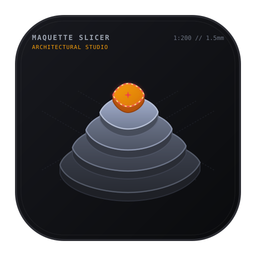

Scale Slicer Studio
ARCHITECTURAL SLICING & FABRICATION
Physical 3D Model
Source 3D Model
2D Cut Sheets
Export SVG
PDF Sheets (.ZIP)
Sheet Format:
A4 (297 × 210 mm)
A3 (420 × 297 mm)
A2 (594 × 420 mm)
A1 (841 × 594 mm)
A0 (1189 × 841 mm)
Laser 600 × 400 mm
Laser 900 × 600 mm
Custom Format...
Cut Paths (Red)
Glue Marks (Blue)
Layer Numbering (#)
← Previous
Sheet 1 / 1
Next →
Fit View
PDF Sheet
Scale:
1:200
Sheet:
1.5 mm
Layers:
53
Dimensions:
30 × 22.5 × 8 cm
Export SVG réalisé avec succès !